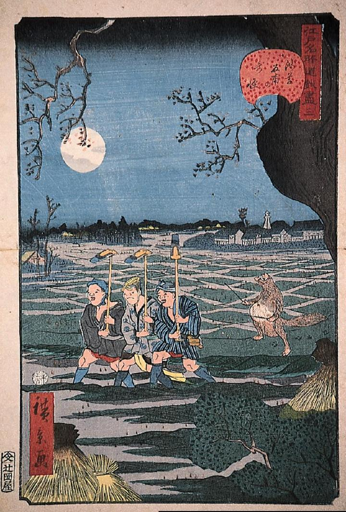

真夜中の田んぼ。水が張られた他の中を、鍬を持った三人の男が並んで歩いている。その後ろでは狸が、指揮者のような格好をして腹をバチで叩いている。
著作者：歌川広景／出典：親書誌：M80_naprstek_0012：浅草反甫の奇怪；アサクサタンボノキカイ／日付：2011／資源識別子：M80_naprstek_0012_0001_0000
Copyright (c)2010- International Research Center for Japanese Studies, Kyoto, Japan. All rights reserved.